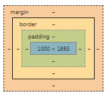

Vývojářské nástroje prohlížečů
Jedná se o doplňky prohlížečů, které lze využít k ladění a "real-time" testování stránek bez nutnosti úpravy souborů. Veškeré takové úpravy jsou ale pouze dočasné. Jsou drobné rozdíly u jednotlivých prohlížečů, hlavně ve vzhledu nástrojů, jejich uspořádání atd., základní funkce jsou ale pořád stejné. Lze je využít k:
- prohlížení zdrojového kódu HTML,
- prohlížení CSS pravidel jednotlivých elementů,
- úpravě CSS vlastností i HTML kódu, aj.
Box model elementů

Každý element má vymezený na webové stránce svůj prostor, který lze upravit CSS pravidly.
- Výška a šířka; Height a Width - udává základní rozměry elementu.
- Vnitřní obraje; Padding (top, right, bottom, left) - určuje vnitřní odsazení pvku a jeho potomků.
- Rámeček; Border (width, color, style) - upravuje rámeček prvku.
- Vnější okraje; Margin (top, right, bottom, left) - nastaví mezeru mezi prvky.
Použitelné jednotky: px (nejčastěji), cm, mm, % ...